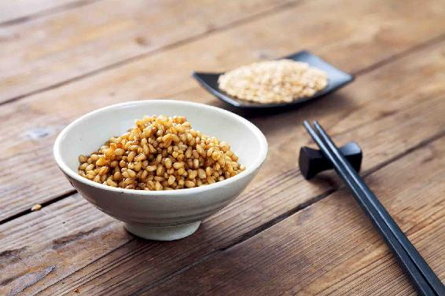

“尚古风俗：凡交芒种节的这日，都要设摆各色礼物，祭饯花神，言芒种一过，便是夏日了，众花皆卸，花神退位，须要饯行。然闺中更兴这件风俗，所以大观园中之人都早起来了。那些女孩子们，或用花瓣柳枝编成轿马的，或用绫锦纱罗叠成干旄旌幢的，都用彩线系了。每一棵树上，每一枝花上，都系了这些物事。满园里绣带飘飖，花枝招展，更兼这些人打扮得桃羞杏让，燕妒莺惭，一时也道不尽。”
——《红楼梦》第二十七回
芒种之时，春末夏初开的最后一批花也都谢了，古人多情，就会在此时隆重地举行“送花神”之礼。
“狂风落尽深红色，绿叶成阴子满枝。”花事已了，却不是结束，而是收获的开始。
麦子熟了，樱桃红了，各种果实生长旺盛，人体也进入了生长高峰期。
交芒种节气开始，我们就进入夏天的第二个月，也就是仲夏了。
一年中有两个关键性的月份，一个是仲冬之月，一个是仲夏之月，它们是两个极端。
仲冬之月，阳气断绝；仲夏之月，阳气到了顶点。当阳气到了顶点的时候，我们的生命也到了生长的高峰期，身体的新细胞会长得非常快。
如果您想保持青春，延缓衰老，仲夏之月是关键时期。如果您在这段时间保养不好，就丧失了一年中修复人体老化的最宝贵机会。
在芒种节气，怎样给身体加一点儿促进快速生长的动力呢？其实，让身体快速生长的关键在于养心。
夏天的天气是与人体的心气相通的，夏天人体之所以能够快速地生长，是靠心脏的阳气来推动的，因此，芒种期间，养心是重中之重。
养心有两个方法。
1.靠吃
芒种，它之所以得名芒种，其实就是指在这个时候有芒的粮食作物，有的已经收获了，有的要开始播种了。总之就是农民伯伯忙于收获粮食和播种粮食的日子。
忙于收获什么粮食呢？有芒的麦子。
我们经常喜欢说，针尖对麦芒，麦芒就是芒种的芒字的来历，芒就是麦穗上那根细细长长的尖刺。
麦芒对于麦子是有保护作用的：
第一，它这种尖刺能防止鸟等小动物来偷吃麦子。
第二，它能进行光合作用。麦芒其实是麦子的一种叶子，只不过是退化了的叶子，有麦芒的麦穗可以更好地进行光合作用，更好地吸收营养，这样的麦粒也更有营养。这就是麦芒的作用。
芒种时收获的麦子，古人认为它是得四时之气的，因为这时的麦子是冬小麦，它是在深秋的时候播种，经过了一个冬天、一个春天的生长，在夏天收获。四个季节它都经历了，所以这样的麦子营养是最为丰富的。
2.多吃整粒麦子煮熟的饭
在芒种节气，我们可以用麦子来养心气，怎么养呢？就是吃麦饭。麦饭就是用整粒的麦子煮熟的饭，味道相当好。
实际上，植物的果实、叶子、根茎，都是有互相补充作用的，如麦芒，是可以清利湿热的，特别是对有黄疸的人有很好的效果。这个奥妙是古人发现的，而且中医历来也是把麦芒当成一种药材来用的。
麦子的麸皮和麦粒，它们是有营养的，而且之间的营养是互相补充的。也就是说，整粒的麦子跟麦子磨成的面粉是有很大区别的。
因此，芒种期间，我建议您吃的麦饭跟平时吃的面食的作用是大不一样的。
为什么呢？因为麦饭养心的效果会更好，它主要依靠麦子外面的那一层麸皮。麸皮含有很丰富的维生素B族，是可以营养神经的，还有止虚汗的功效。
夏天的时候，有一些朋友，尤其是一些中年女性朋友，会感觉到有一点烦热。
什么叫烦热呢？其实，并不是真的觉得气温很高，热得受不了，而是皮肤表面有一种热，然后会出一阵汗，在同样的气温下，别人可能不会这样，只有他有这种现象，这就叫烦热。
这种烦热其实是心气虚的一种表现，这时候您只要吃一点麦饭，就会缓解很多。
中医讲，“汗为心之液”，如果一个人无缘无故地出虚汗，就表示心气虚了，那您可以吃麦饭来养心，好好地滋养自己的心气。
小孩子需不需要养呢？小孩子要养的是心和脾，脾胃是重中之重。因此，在芒种的时候，也可以给小孩子吃一点麦饭，或者麦粒儿煮的稀饭，这会对小孩子集中注意力学习有非常大的好处。有的小孩子总是坐不住、注意力不集中，那您就可以经常给他吃一点麦饭。

还有一些朋友，脾胃比较虚弱，虽然到了芒种节气，天气已经很热了，但他却经常拉肚子或者大便溏薄——大便不成形。像这样的朋友，可以用麦粉或者是磨好的面粉，把它炒一下。
炒的时候，最好是放一点牛骨髓油在铁锅里面，把它炒熟。还可以加一点点核桃。炒好后保存起来。每次吃的时候用开水冲调一下，这个味道是很好的。
您也可以在炒的时候加一点点的盐，或者加一点点的糖，这样它的滋味会更丰富，小孩子吃起来会觉得更香甜。
炒面，一是特别地滋养心脾，二是对腹泻、大便不成形的朋友，有很好的调理作用。
有些人一到夏天就食欲不振，小孩子也老是不吃饭，一个夏天下来能瘦很多，遇到这种情况，您就可以用吃炒面来调理。
这样的炒面，您要是喜欢吃的话，是可以一直吃下去的。它不仅适合于芒种节气，整个夏、秋季都很适合。如果是大便不成形或者是脾胃虚弱的人，一年四季都可以吃它。
这个时期，古人也称为麦秋，因为这是麦子的秋天，大自然在夏天这个时候安排麦子这种“心之谷”成熟，就是来帮助我们养心的。我们除了感谢，真的没有别的话好说，因此，趁着新麦上市，我们一定要好好地利用大自然赐给我们的这个养心宝贝，好好地吃麦饭、炒面来养护我们的心气。
读者评论：有小时候妈妈做的味道
徐巧_no：我们家的小麦刚下来，昨晚做了炒面，还加了点核桃，特别好吃，有小时候妈妈做的味道。然后用炖锅把洗净的小麦炖了一晚上，上午打了浆喝，中午又做了麦饭，味道不错，还很耐饿。
仲夏，是阳气到达顶点的一个月，在此时成熟的果实，连种子都带着充足的阳气，比如，水果中的樱桃、豆类中的蚕豆、调料中的大蒜、粮食中的麦子，都是在这个时节应季上市的。我们吃这些时鲜的食物，就能帮助身体好好补充阳气。
芒种节气乃至整个仲夏时节，都适合来吃麦饭。
新的一季小麦已经成熟、收割了，我们可以把它买回来好好给自己做麦饭来吃。
注意啊，不能把它磨过再吃，新麦是不能用来磨面的，因为小麦在收获以后还有一个后熟的过程，最快也要等两个月才能吃到新麦磨成的面粉。所以新收的小麦都是整粒地煮着来吃。
您可以买新收获的麦粒儿或者是麦仁，用来煮饭。
怎么个煮法呢？有两种。
第一，在早上煮稀饭。
您可以把一半的小麦粒和一半的大米掺在一起，用来煮稀饭，也可以单独煮小麦粒。其实，单煮小麦粒也挺好吃的，这样煮出来的小麦粥，它并不黏，因为是带皮儿的，所以煮出来有一点像小麦汤的感觉，但味道还是不错的。当然，它跟大米粥不一样，不能直接喝，而要先咀嚼一下，因为麦粒带皮儿。
第二，把麦粒和大米掺在一起煮。
如果您觉得小麦粒的口感还可以接受，那您就不用放大米，直接把小麦粒煮成麦饭吃就行了。
不管您是煮麦粥还是煮麦饭，有一点要注意，就是煮的时间要非常长，最好是提前一个晚上，把麦子用水泡起来，等第二天再煮。
灌浆不太饱满的麦粒儿比较瘪，其实，这些瘪掉的一些麦粒，恰恰是一味中药，叫作浮小麦。
为什么叫浮小麦呢？就是清洗小麦时，会有一些干瘪的麦粒漂浮在水面上，这些漂在水面上的小麦就被称为浮小麦。浮小麦几乎没有什么内容，就外面的一层皮，就是麸皮。
其实，我们吃浮小麦为的就是获取麸皮的营养，所以当您买到了新麦以后，一定要珍惜这一层麸皮。不管是煮麦粥，还是煮麦饭，为的就是不仅吃到麦子本身的营养，还要吃到麸皮的营养。
我曾经分享过一个抗抑郁的食方——甘麦大枣粥，它源自医圣张仲景的千古名方甘麦大枣汤。这个方子里用的就是小麦粒。
小麦粒其实能很好地滋养我们的心阴，同时它又含有丰富的维生素B族，可以营养神经。有焦虑、失眠，以及芒种期间身体特别燥热的朋友，都可以食用甘麦大枣粥、甘麦大枣汤。
用古人的哲学思维来说，“麦为心之谷”，麦子是属火的一种粮食，而火又是克金的。特别是在一些金气横行的年份，多吃一点属火的麦子，是正当其时的。
我要提醒一下，仲夏时节应季上市的食物不是每个人都可以吃的，因为这些食物的阳气太足，如果体内有湿热、正在上火、感冒咳嗽或有过敏症状的朋友，一定要当心。
不管是新麦、新鲜樱桃、新鲜蚕豆还是新蒜，它们都是时鲜的发物，也就是说，吃它们容易使人旧病复发。
如果您属于以上几种情况，又想吃麦子，怎么办呢？我建议您可以吃去年的麦子，这样就比较保险了。